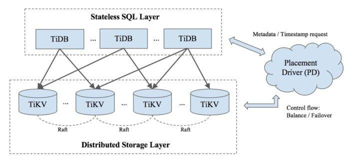

Hello World
CodeTengu Weekly 碼天狗週刊
只要命運的齒輪沒有出差錯，CodeTengu Weekly 都會在 UTC+8 時區的每個禮拜一 AM 10:00 出刊。每週會由三位 curator 負責當期的內容，每個 curator 有各自擅長的領域，如果你在這一期沒有看到感興趣的東西，可能下一期就有了。當然你也可以瀏覽一下前幾期的內容。
目前的 curator 陣容：
- @vinta - I failed the Turing Test - 科幻迷，最近在讀 Dirk Gently 系列
- @saiday - Imnotyourson - 電量給我這種人用就是一種浪費
- @tzangms - Oceanic / 人生海海 - 我最近居然開始在挖礦跟研究區塊鏈了呢
- @fukuball - ImFukuball - 有新工作了，但歡迎直接挖角
- @mingderwang - Ethereum enthusiast
- @kako0507 - 熱愛嘗試新事物的前端工程師
- @chiahsien - 誰能告訴我到底該怎麼處理螢幕觸控壞掉的 iPad Mini 2
- @uranusjr - Smaller Things - 我要成為錯字王
- @kkdai - 態度萬歲 - Learning Deeply....
- @yhsiang
- @johnlinvc - 挑戰自動化家中電器
- @drumrick - 歡迎加入台灣 Kaggle 交流區
- @wancw
你也可以關注我們的 Facebook、Twitter、GitHub 或 Open Source 專案，有很多 weekly 看不到的內容。有任何建議也歡迎來 Gitter 聊聊。
 @saiday
@saiday
系統設計入門
@kevingo 發起的 The System Design Primer 繁體中文翻譯計畫。
直接引用內容：
學習如何設計可擴展的系統會幫助你成為一個更好的工程師。
系統設計是一個廣泛的主題。在網路上，關於系統設計的資源也是不計其數。
本專案將許多資源進行分門別類，幫助你學習如何建構可擴展的系統。
內容豐富，分類精確，大推！
From AutoValue to Kotlin data class
這篇文章只講了從 Java + AutoValue 轉移到 Kotlin data class 的過程以及實務上用到 Parcelable 的解決方案。如果沒有很清楚 AutoValue，可以看一下 Jack Wharton 的 AutoValue Extensions 介紹。
很多人寫 Kotlin 就是從導入 data class 開始，而用了 data class 幾乎是免費得到了 Java 實作了 AutoValue 的成果，因此從 AutoValue 的角度回頭去看 data class 我覺得更好理解。
- immutability
- value types
註: 其實無論AutoValue或 data class 都不是真正的 value types，在目前的 JVM 只有 primitive types (int, float, boolean, ..)，你無法定義自己的的 value types，似乎 Java 10 才會有直接的 value type，但這不知道要等多久。
the tldr; on Kotlin’s let, apply, also, with and run functions
對一個正在用或學習 Kotlin 的人來說，了解 Kotlin standard library Standard.kt 提供的函式擴展方法，就能寫出 (看懂) 更 Kolin 風格的程式碼。如果你本來就對 Functional Programming 有概念，會覺得非常熟悉。
這篇少提了 takeIf 跟 takeUnless，也是很常用的 function extension。
Swift Static Library support by DanToml
各位寫 Swift 並且用 CocoaPods 來管理依賴的朋友們有福了。
CocoaPods 準備支援 Swift Static Library 了，這也就意味你不需要再用 Dynamic Frameworks 了！
看到這裡還沒興奮起來的人可以參考我之前發在 105 期的 CocoaPods 的 use_framework! 是在 use 什麼 framework？
有人已經搶先測試，app launch time 從 2 秒減少到 0.5 秒、app bundle size 從 102 MB 減少到 90 MB。 (tweet)
 @kkdai
@kkdai

TiDB: Performance-tuning a distributed NewSQL database
TiDB 一個透過 Golang 開發的 Distributed SQL Database ．
你可以像使用 RDB 一樣使用 SQL 來查詢，卻有可以具有分散式資料庫 (Distributed DB) 的高可用性 ( HA: high availability) 與資料儲存的分割性．
這篇文章由淺入深的介紹了 TiDB 的架構與運作原理，有興趣的都可以看看
An argument for value receiver constructors - Tit Petric
在 Golang 裡面你都怎麼來建置你的 receiver constructors? 是透過 &YourStruct{} 還是 new(YourStruct)?
這篇文章分享了哪樣比較快，並且從記憶體裡面探討為何該這麼做，看完可以讓你的服務更快喔..
Google Understanding Go Interfaces @GopherChina 2017
分享一下去年 GopherChina 的舊影片． "Understanding Go Interface"
這場由 Francesc 帶來的演講，講解了一個相當好用的概念． 透過 Interface 來將你的代碼更加的抽象化，這些概念能知道，但是最近在開發上就深刻感受到強大
分享給大家.
( 小爆點： 第一個發問的人真有趣... lol
Interfaces in Go - Tit Petric
Interfaces 的設計架構在 Golang 裡面是相當強大的設計理念． 透過越少的架構設計，越能夠將你的程式碼更加的抽象化．
如果你不是很了解該如何使用 Interfaces 的設計方式，可以看看這篇文章．
透過由大家熟悉的物件導向的設計方式，慢慢將設計理念與想法轉換到 interfaces ． 你會發現寫出來的代碼具有更抽象的概念，並且有更多的應用場景．
 @drumrick
@drumrick
精美的 deeplearning.ai 課程筆記，獲得吳恩達親自轉貼！
一微軟的工程師 Tess Ferrandez，研讀了吳恩達以 deeplearning.ai 為名在 Coursera 開設的深度學習系列課程後，製作精美的筆記並分享在推特上，連吳恩達都親自在各個社交平台上轉貼。因為只有 28 頁，是真的畫得密密麻麻，要全螢幕才能看得清楚，如果你也剛上完課，拿出來複習用倒是不錯。
Machine Learning Flashcards 是另外一個跟機器學習相關的精美小抄，300 張售價 12 美元，中國網民們也相當勤勞地翻譯的簡體中文，而且還被原作在推特上分享了！
18 種 GANs 的 Keras 實作，獲得 Keras 作者轉貼！
上面是做筆記被老師轉貼，現在這個是用套件寫實作，寫到被套件作者轉貼。
去年底開始因為工作的緣故，開始研究各種 GANs，自己也用 PyTorch 實作著各種變形。結果突然看到這麼一個 repo，用 Keras 實作了幾乎所有主要應用的 GANs，而且連 Keras 作者 François Chollet 都在自己的推特上轉貼。
另外 Keras 的簡中文件現在有了官方版本，雖然說一直都有民間版本，但這個官方的版本呢，感覺品質還是比較好的，而且這也是由 François Chollet 在推特上號招 Keras 的中文使用者們一同合作而產生的。
Google 發表 Neural Network 論文，連帶發佈 Lucid 視覺化套件。
自從 Neural Network 在多項研究上有重大突破後，關於它的『可解釋性』就一直受到質疑，Google 這位老大哥在這件事情的努力上當然也從來沒鬆懈過。這次發佈的 Lucid 是基於 2015 年的 DeepDream，那個當時看起來很噁心，現在看起來還是很噁心的外星圖片們，似乎多了點邏輯。
這次的發佈更讓我印象深刻的是整個配套，首先是基於 DeepDream，一個大家雖然看不懂但是很有記憶點的基礎，發展 Lucid 來做更進一步的解釋，而在 distill 上面發表，讓讀者直接跟範例資料互動，最後在 github 上公開的程式碼不只是範例而已，直接自帶最新的服務 Colab 的 ipython notebook，讓使用者完全不用處理任何硬軟體的相依性，直接開始操作。將好奇，瞭解，嘗試，執行各個動作之間的門檻降到最低！這絕對是任何套件或是論文發佈到目前為止，最流暢的使用者體驗。
CVPR 2018 的影像辨識競賽資料集：iNaturalist
目前資料量最大、最常用的影像資料集應該就是 ImageNet 了
ImageNet 包含 200 個類別，超過 51 萬張影像
而 iNaturalist 2018 包含 8000 個類別，45 萬張影像。
比起去年 iNaturalist 2017的 5000 個類別，67.5 萬張影像，
長尾的現象肯定更加嚴重，兩個資料集是有重疊的，
但官方將不會提供對應表，也沒有說明數量上為何有如此的差異。
大家蓄勢待發了嗎？感覺 GPU 溫度又要居高不下了啊！
製作一個正確率大於 95% 的假新聞辨識模型的歷程
這不是一篇技術文，完全沒有提到模型怎麼建立，參數怎麼調，但是真實描述了做機器學習研究或產品過程中的各種折磨。「分辨新聞的真假」一句話很簡單，但是從定義題目的基本：「什麼是假新聞」就不是那麼絕對，開始觀察資料以後就發現，對問題的了解跟資料呈現的樣貌不盡相同，由於認知到應該找不到合適的資料做為實驗的資料集，決定自己標記資料，然後發現使用的技術方法不同，需要的標記方式也不同，於是重新標，第一次做完模型正確率只有 70%，猜測是訓練資料不夠，再繼續標，直到得到自己滿意的正確率為止。
這段過程其實是相當需要經驗的，常常也被其他職位的人忽略，但是如果這個階段做得不正確，往往後面做的努力都會白費。
雖然標題說正確率有 95%，但作者也開門見山的說，用在真實資料的準確率應該更低，畢竟這只是有限資料集的實踐結果而已。
工作機會
Senior System Developer at Vynca
薪資：
- 月薪為台幣 120,000 以上, 依照能力敘薪
- 薪資結構為 12 個月, 獎金依公司營運狀況發放
- 新創公司的員工股票選擇權
基本條件：
- 熟悉至少一種程式語言
- 熟悉網際網路基本知識
- 熟悉 HTTP 的運作以及 RESTFul API 設計
- 熟悉撰寫測試如 Unit test, Integration test, End-to-End test
- 熟悉系統效能調效如 Network tuning, SQL query tuning, Capacity planning
Senior Frontend Developer at Swag
薪資：年薪新台幣 100 ~ 200 萬元，強者上限可議。
基本條件：
- 精通 JavaScript、CSS 與 HTML
- 相容主流瀏覽器的前端整合開發經驗
- 前端 framework / library 的使用經驗
- 熟悉 React
- 模組化開發經驗
Senior Backend Developer at Swag
薪資：年薪新台幣 100 ~ 200 萬元，強者上限可議。
基本條件：
- In-depth knowledge of Python or NodeJS
- Experience with Python web frameworks ie. Flask/Django/Tornado
- Utilized work queues for background processing
- In-depth knowledge of Mongo and Redis
- Excellent understanding of HTTP
- Experience developing REST APIs
Random Cool Stuff
Buy Me A Coffee — Free, Fast and Friendly Way to Receive Donations
如果你看到很好的 GitHub repo 或是一篇很好的文章，你會如何贊助該貢獻者?
這個網站很有趣，提供了一個付費的管道給你喜歡的作者．
我是從 Go Perf-book 這個 GitHub repo 看到的， Damian Gryski 是一位 Golang 的演算法大神，他就有申請這個．
如果你是部落格的作家或是開源專案的貢獻者，不仿看看這個吧．
由 @Evan_Lin 提供．